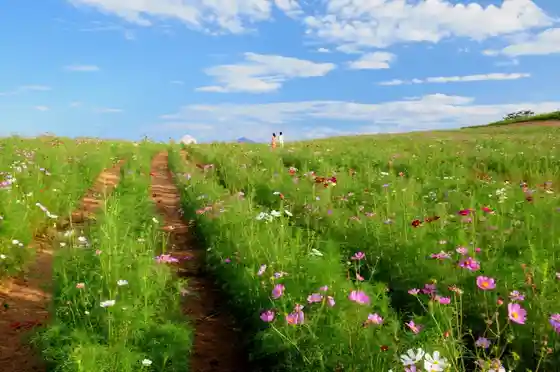
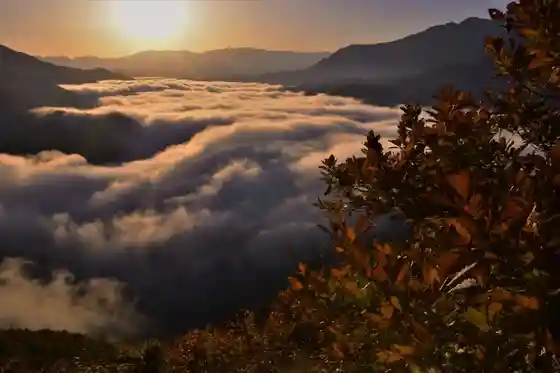
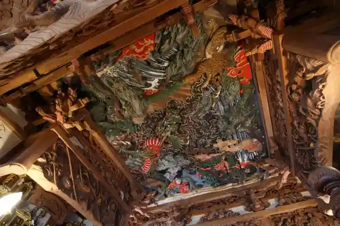

Uehara Kosumosu Sono
Uonuma, Niigata · 025-792-7300 · Official / source link

Shiori Toge (Shioritoge)
Uonuma, Niigata · 025-792-7300 · Official / source link

Okutadami Mizumi
Uonuma, Niigata · 025-795-2750 · Official / source link
Saifuku Tera (Kaisan Do)
Uonuma, Niigata · 025-792-3032 · Official / source link

Okutadami Mizumi Yuransen
Uonuma, Niigata · 025-795-2750 · Official / source link
Echigo Komagagaku Shiori Toge Tozanguchi
Uonuma, Niigata · 025-792-7300 · Official / source link
Roadside Station (Yu no Tani)
Uonuma, Niigata · 025-792-7300 · Official / source link
Taki Kumo Marushie in Ginzan Taira
Uonuma, Niigata · 025-795-2611 · Official / source link
Rokuju Sato Etsu Toge
Uonuma, Niigata · 025-792-7300 · Official / source link
Uonuma Shibazakura Festival
Uonuma, Niigata · 025-780-4560 · Official / source link
Ginzan Taira
Uonuma, Niigata · 025-792-7300 · Official / source link
Eirin Tera
Uonuma, Niigata · 025-794-2266 · Official / source link
Echigo Yukikura Kan
Uonuma, Niigata · 025-797-2777 · Official / source link
Oyu Onsen
Uonuma, Niigata · 025-792-7300 · Official / source link
Tochio Mata Onsen
Uonuma, Niigata · 025-792-7300 · Official / source link
Roadside Station (Irihirose)
Uonuma, Niigata · 025-796-2500 · Official / source link
Meguro Tei
Uonuma, Niigata · 025-797-3220 · Official / source link
Aoshima Onsen Miharashi no Yu Komami
Uonuma, Niigata · 025-792-8001 · Official / source link
Ginzan Taira Campground
Uonuma, Niigata · 025-795-2448 · Official / source link
Iono Kawa
Uonuma, Niigata · 025-792-0261 · Official / source link
Toshikazu Onsen
Uonuma, Niigata · 025-796-3033 · Official / source link
Arasawa Gaku Ginzan Taira Tozanguchi
Uonuma, Niigata · 025-792-7300 · Official / source link
Koide Park
Uonuma, Niigata · Official / source link
Kusurishi Onsen Yu Park Kusurishi
Uonuma, Niigata · 025-792-5554 · Official / source link
JA Uonuma Nosambutsu Chokubai Tokoro Uonuma Hyaku Nanohana N
Uonuma, Niigata · 025-792-7066 · Official / source link
Oritate Onsen
Uonuma, Niigata · 025-792-7300 · Official / source link
Uonuma Jozo
Uonuma, Niigata · 0120-060-070 · Official / source link
Enpuku Tera
Uonuma, Niigata · 025-792-0871 · Official / source link
Okutadami Mizumi Yuransen Kodomo Sencho Experience
Uonuma, Niigata · 025-795-2750 · Official / source link
Ginzan Taira Onsen
Uonuma, Niigata · 025-792-7300 · Official / source link
Fukuyama Toge no Setsujo Sakura
Uonuma, Niigata · 025-792-7300 · Official / source link
Ha Kan Kawa Gorge (Aburumagawakeikoku)
Uonuma, Niigata · 025-792-7300 · Official / source link
Fukuyama Toge no Furusato Plaza
Uonuma, Niigata · 025-797-2366 · Official / source link
Okutadami Rekurieshon Miyako City Park Hibiki no Mori Park
Uonuma, Niigata · Official / source link
Suhara Ski Area
Uonuma, Niigata · 025-797-2059 · Official / source link
Sato Ie
Uonuma, Niigata · 025-795-5015 · Official / source link
Gongendo Yama Nagamatsu Tozanguchi
Uonuma, Niigata · 025-792-7300 · Official / source link
Ha Kan Kawa Dam no Yuki Nagare
Uonuma, Niigata · 025-792-7300 · Official / source link
Iono Kawa Sakura Zutsumi
Uonuma, Niigata · 025-792-7300 · Official / source link
Tairagagaku Taka no Su Tozanguchi
Uonuma, Niigata · 025-792-7300 · Official / source link
Asakusa Gaku Mujina Sawanobori Yamaguchi
Uonuma, Niigata · 025-792-7300 · Official / source link
Togakushi Shrine
Uonuma, Niigata · 025-792-7300 · Official / source link
Machi no Eki Uonuma
Uonuma, Niigata · 025-795-5006 · Official / source link
Miya Shuji Memorial Museum
Uonuma, Niigata · 025-794-3800 · Official / source link
Echigo Habu Kaori Sono Irihirose
Uonuma, Niigata · 025-796-2120 · Official / source link
Okutadami Maruyama Ski Area
Uonuma, Niigata · 025-795-2750 · Official / source link
Koide Ski Area
Uonuma, Niigata · 025-792-5320 · Official / source link
Hajimete no Yuki Asobi Experience in Uonuma | Yuki Iku Monita Tour
Uonuma, Niigata · 025-792-7300 · Official / source link
Uonuma Nature Science Museum Hoshi no Ie
Uonuma, Niigata · 025-797-2360 · Official / source link
Sumon Gaku
Uonuma, Niigata · 025-792-7300 · Official / source link
Kusurishi Ski Area
Uonuma, Niigata · 025-792-5554 · Official / source link
Aoshima Kyoiku Shrine
Uonuma, Niigata · 025-792-2456 · Official / source link
Hirose Yana
Uonuma, Niigata · 025-799-2093 · Official / source link
Buruberii Kari (Uonuma Mariizu Farm)
Uonuma, Niigata · 090-6941-8304 · Official / source link
Zazenso Gunsei Chi
Uonuma, Niigata · 025-794-6073 · Official / source link
Hayatsu Gyararii
Uonuma, Niigata · 025-792-1451 · Official / source link
Oda Warabi Village
Uonuma, Niigata · 090-2881-0835 · Official / source link
Okutadami Denryoku Kan
Uonuma, Niigata · 025-795-2059 · Official / source link
Bananaboto / Kusurishi Ski Area
Uonuma, Niigata · 025-792-5554 · Official / source link
Yu no Tani Tezu Kuri Village
Uonuma, Niigata · 025-793-1000 · Official / source link
Sa Nashi Kawa
Uonuma, Niigata · 025-792-0261 · Official / source link
Koide Koen Katakuri Gunsei Chi
Uonuma, Niigata · 025-792-7300 · Official / source link
Aki no Kosumosuoku
Uonuma, Niigata · 025-797-3566 · Official / source link
Oze Pasu Toranjittochigatto
Uonuma, Niigata · 025-792-7300 · Official / source link
Nunobiki Falls
Uonuma, Niigata · 025-792-7300 · Official / source link
Okutadami Rekurieshon Miyako City Park Ne Koya (Negoya) Hana to Midori to Yuki Village
Uonuma, Niigata · 025-780-4560 · Official / source link
Oze National Park
Uonuma, Niigata · 025-792-7300 · Official / source link
Uonuma History Museum
Uonuma, Niigata · 025-793-7782 · Official / source link
Gosetsu Chi (Uonuma) De Taikan ! Seijaku no Sekai Wo Iku Su no Shu Experience
Uonuma, Niigata · 025-792-7300 · Official / source link
Yukimi Sanpo Teiitaimu & Setchu Tentosauna Experience
Uonuma, Niigata · 025-796-2331 · Official / source link
Oritate Shaka Do no Yu Mizu (Shakado no Ibomizu)
Uonuma, Niigata · 025-792-7300 · Official / source link
Mannen Yuki
Uonuma, Niigata · 025-792-7300 · Official / source link
Teigaku Kanko Takushii Niigata · Uonuma Kanko Meguri (Urasa Eki Hatsu)
Uonuma, Niigata · 025-792-7300 · Official / source link
Haru no Ibuki no Osusowake Tennen no Meipurusappu Saishu Su no Shu Tour
Uonuma, Niigata · 070-4415-0303 · Official / source link
Onigamenzan
Uonuma, Niigata · 025-792-7300 · Official / source link
Aki no Gochisonigiri Uoku
Uonuma, Niigata · 025-797-3566 · Official / source link
Sanjo Falls
Uonuma, Niigata · 025-792-7300 · Official / source link
O Suki Na Kaori De Rifuresshu ! Nyuyokuzai Tsukuri (1 Ko)
Uonuma, Niigata · 025-796-2120 · Official / source link
Suki Na Kaori to Iro Wo Jibun De Choisu ! Orijinaru Ishi Ken Tsukuri
Uonuma, Niigata · 025-796-2120 · Official / source link
Heikatsu Falls
Uonuma, Niigata · 025-792-7300 · Official / source link
Okutadami Mizumi SUP Experience
Uonuma, Niigata · Official / source link